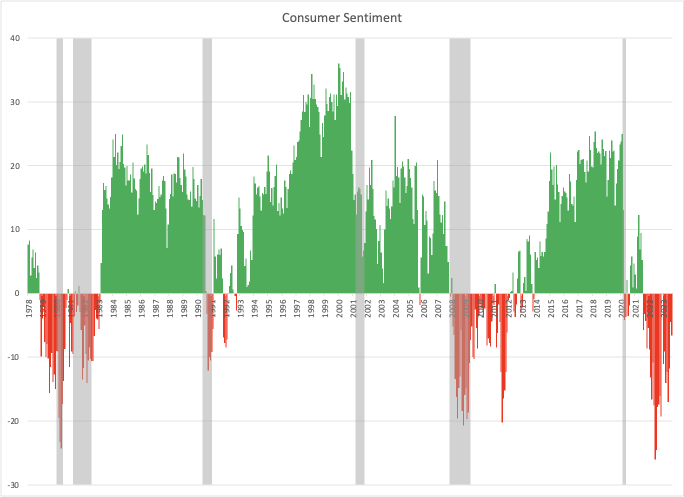

I said I’d return to my more technical themes, and I will. However, during my vacation, I read Heather Cox Richardson’s Substack post here , which caused me to pause again for a data-linked and social science-based topic of particular relevance to our current political climate.
Specifically, Prof. Richardson states:
There is a crucial divorce here between image and reality. Americans think our economy, currently the strongest in the world, is in poor shape. They mistakenly believe it was better under Trump.
This is intriguing syntax because she refers to a “divorce” between what people imagine and reality as if the two concepts were in a committed relationship. That’s not the correct analogy! It’s more like my recurring theme of what scientists observe and Science itself. The connection between belief and reality is interpretation, not an explicit or implied contract. Interpretation can (and should) change, but reality does not. Her analysis also projects a moral judgment about determining what people believe and what qualifies as a “better” economy. That’s her interpretation, not a “mistaken belief”, which, if you parse it strictly, is an oxymoron.
What underpins her statement is a tenuous connection between time series from two entirely different sources, as reported by the Washington Post’s opinion columnist, Catherine Rampell, entitled “When will Americans stop worrying and learn to love the U.S. economy?” 1 . One data series is based on the opinions of consumers about the current state of the national economy, and the other is based on a measure of the country’s economic productivity. There are many to choose from, but Ms. Rampell chose America’s Gross Domestic Product, or GDP, measured in dollars. This data mismatch (between opinion and dollars) points to an essential problem in our current discourse.
Specifically, there is a concept in marketing psychology that distinguishes expressed preferences from revealed ones. Market research (such as in a paid focus group) queries a group of consumers about the product features they prefer. This is an example of an expressed preference. Such an approach is generally used before introducing a new product or feature. The data collected is essentially “opinions.” In contrast, the corresponding revealed preference, sales volume, measures which products people buy. This approach is available only when a product has entered the market. The data collected is essentially “actions” measured in dollars. Revealed preferences are substantially more valuable than expressed ones.
A famous example of how these two preferences can disastrously diverge is the 1985 reformulation of Coca-Cola . After over 190,000 blind taste tests indicated that consumers reliably preferred the taste of Pepsi-Cola, Coca-Cola decided to stem its market slide by changing the taste of its product closer to Pepsi. They did the switch with significant marketing fanfare, ceremonially retiring their “old” formula and introducing “new” Coke. This ‘scientific’ approach backfired badly, leading to a passionate uprising of loyal Coke drinkers, a significant drop in market share, and ultimately a return to the original formula (reintroduced as ‘Coca-Cola Classic’). Despite the gaffe, this flip-flop actually increased Coke’s market share over Pepsi by enabling some customers to self-identify as “loyal” Coke drinkers despite its less appealing taste (at least on average).
Drawing a parallel to Prof. Richardson’s statement, there are a large number of Americans who identify themselves as loyal Trump supporters despite punditry that regularly exposes the former President’s flaws. Objectively, at least, he’s a poor choice for a Presidential candidate. What thought leaders miss is that once an individual has identified with a brand (a characteristic of both Trump and Coke), the brand becomes part of the consumer’s self-image. Because Trump’s consistent branding to his supporters (amplified and validated by media) is that America is going to hell in a handbasket unless he is allowed free rein, it shouldn’t be at all surprising that survey respondents express the opinion of their tribe.
Still, let’s stick with the program, examine the data, and see what we see. The critical measurement is the Index of Consumer Sentiment (ICS), a measurement of how consumers feel about the American economy.
The University of Michigan has systematically measured the ICS since the 1940s. Since 1978, the same 50 questions have been asked of a “nationally representative” set of 600 consumers by telephone. [For those who remember 1978, contemplate how much society and communication have changed in the last 45 years! The Michigan researchers have tried to adjust their approach to account for those changes by including mobile phones and multigenerational households in their surveys, for example. Still, the fact remains that the results are based on the opinions expressed by 600 individuals willing to spend time on the phone with a stranger.] It turns out that only 5 of the 50 questions relate to consumer sentiment, and they’re generally phrased in a “Is it better or worse?” form. The index is calculated as a difference between the number of individuals who believe the country is improving and the number who say that it’s deteriorating.
Here’s a chart derived from reported monthly data:

In this chart, net positive opinion is coded in green, net negative opinion is coded in red, and periods of economic recession are shaded. There is a poor correlation between opinion and economic reality, with a possible trend of having opinions shift from leading to trailing economic outcomes. Certainly, the recent pessimism is an outlier since there has been no economic recession despite the continued effort by the Federal Reserve.
The data-relevant question is, for scores to go from +20 to -20 (the approximate range of opinions), “How many of the 600 respondents would need to flip their views to account for the result?” Let’s simplify the problem to say that each respondent is either entirely optimistic or entirely pessimistic, answering all five key questions identically according to their mood. With that assumption, it turns out that the number is 162, or 27% of respondents, the same fraction as the so-called ‘Trump Base”. So, even if you accept that the sampling is genuinely representative (I have my doubts, but I’m not a professional), the results can be explained as emergent tribalism rather than the naive assumption that each respondent expresses their opinion independently.
The sad fact is this: Since the advent of the 24-hour news cycle (1982) and Internet news (1983), reporters have been forced to find more news to cover to fill space. This has led to more and more coverage of survey and poll results as truth. When combined with the abolition of the Fairness Doctrine (1987), which caused America’s news media to become increasingly partisan, reporters can now select surveys that feed their narrative rather than approaching a question in a fair and balanced manner. I think that the alternative conclusion (versus “worried Americans”) is that Americans are answering surveys according to the brands they associate with, like Trump and Coke, rather than independently expressing their opinion. Because Michigan’s select 600 are not hermetically sealed from the media, they express the tribe’s views rather than their own.
In this instance, opinion polls are publicly expressed preferences, and election results are privately revealed preferences. Hence, the subtitle of this week’s installment:
Vote, people. Vote.
I am, of course, projecting myself on my readers and assuming that you’re more intelligent and less tribal than average. I hope you don’t mind!
To answer Ms. Rampell’s rhetorical question, “When will Americans stop worrying and learn to love the U.S. economy?” the answer is equally rhetorical, “Are Americans actually worried, or do they just believe they have to tell pollsters they are?”
Thank you for reading Healing the Earth with Technology. This post is public, so feel free to share it.
Posted October 26 at 6:17 pm EDT. See washingtonpost.com